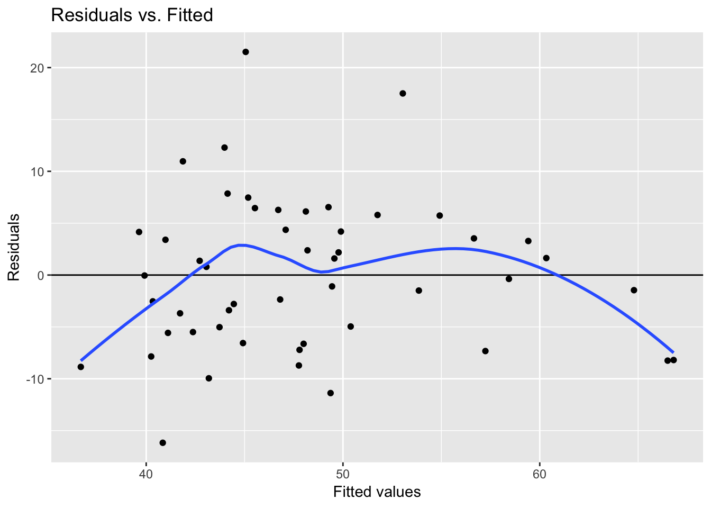
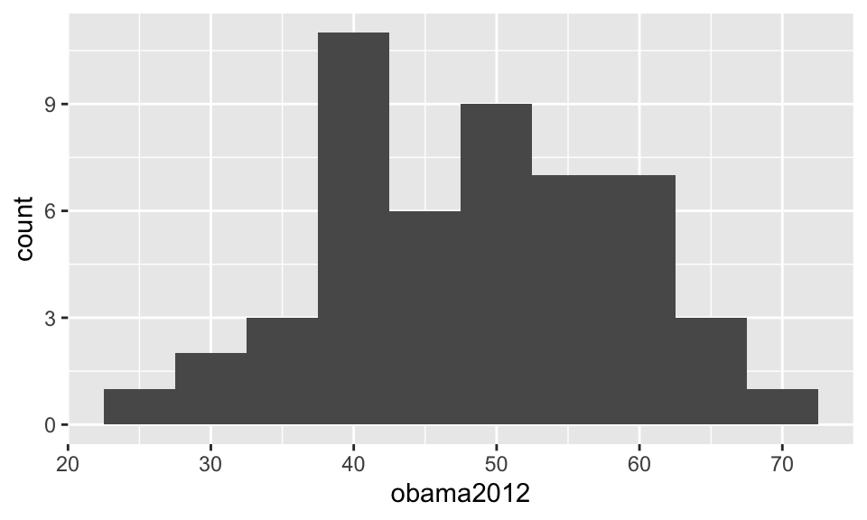
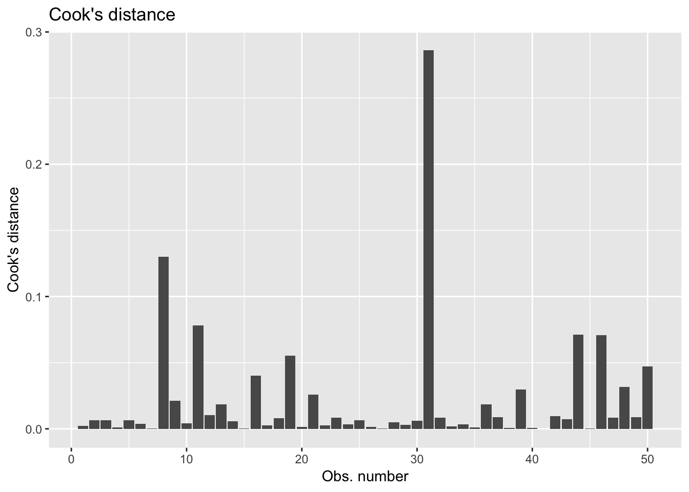

Chapter 8 Presenting distributions
Table 8.1 shows the geometric objects we will be working with below. In addition to the name of the object, you will also find a link where you can find more illustrations and examples on how they work.
| Name | Function | Cookbook for R |
|---|---|---|
| Bar plot | geom_bar() |
Bar and line graphs |
| Histogram | geom_histogram() |
Plotting distributions |
| Density plot | geom_density() |
Plotting distributions |
8.1 Bar plot
The first plot we will do is a bar plot. To do this we use a variable on the number of restrictions on abortion (abortlaw10) and geom_bar().
ggplot(states, aes(x=abortlaw10)) +
geom_bar() 
8.2 Histograms
The next figure we will work with is the histogram. Here we will plot the distribution of Obama’s vote share in 2012 (the obama2012 variable) and use geom_histogram().
ggplot(states, aes(x=obama2012)) +
geom_histogram() ## `stat_bin()` using `bins = 30`. Pick better value with `binwidth`.
As you can see, we get a message about the use of a default binwidth. This is to emphasize the importance of specifying the binwidth yourself. We can change the bin width by adding binwidth to geom_histogram().
ggplot(states, aes(x=obama2012)) +
geom_histogram(binwidth = 5)
Play around with different binwidths to see how it affects the distribution in the figure.
8.3 Density plots
The histogram is not the only way to show the distribution of a variable. To make a density plot, you can use geom_density(). We use the obama2012 variable again.
ggplot(states, aes(x=obama2012)) +
geom_density() 
Do compare the density plot to the histograms above.